Start with a signal.
Images, depth, and motion become the inputs for understanding a scene. Camera calibration and reliable acquisition make those signals useful.
SOWMYA JAYARAM IYER · INDIANAPOLIS, IN
I build computer vision and deep learning systems that understand the world—and run in it.
Computer Vision Software Engineer · Advanced R&D
Toyota Material Handling · June 2023–Present
Learning representations, layer by layer.
FROM IDEA TO INTELLIGENCE
Observe the world
Images, depth, and motion become the inputs for understanding a scene. Camera calibration and reliable acquisition make those signals useful.
Neural networks turn observations into learned representations—from retinal structures to pedestrian detections and multimodal interactions.
GPU optimization, sensor fusion, and robust software bring models into systems where latency, continuity, and reliability matter.
01 / ENGINEERING IN PRACTICE
Computer Vision Software Engineer · Advanced R&D
Indiana, USA
Warehouse perception needs to recognize pedestrians reliably across changing lighting, camera angles, clothing, and partial occlusion. I fine-tuned RF-DETR on 7,000 annotated warehouse images to improve pedestrian recall from 62% to 97%, achieve approximately 78% mAP@50:95, and extend the effective detection range from 4 to 8 metres.
To bring the model onto Jetson AGX Orin, I optimized inference with TensorRT FP16 and built a GPU processing pipeline using CUDA preprocessing, GPU postprocessing, asynchronous streams, and CUDA Graphs. These changes accelerated RF-DETR Medium by approximately 2.2–2.6×, with the processing pipeline taking about 8–12 ms per image.
I developed an RGB-D visual odometry pipeline to maintain continuity in reference-image-based forklift localization. The system matches ORB features between frames, uses depth to establish 3D–2D correspondences, and estimates motion with PnP-RANSAC. Kalman filtering refines the vehicle’s position and trajectory from a known starting pose.
I then combined visual odometry with IMU measurements and CAN-derived wheel odometry through an Extended Kalman Filter, bringing multiple sources of motion information into the position and orientation estimate. Asynchronous processing and frame buffering reduced processing latency from roughly 6 to 3 ms, while dropped frames fell from 10–12 to about 6 per second on a 30-FPS stream.
This project connected pedestrian detection with depth measurements so collision-zone checks could use real-world distances. I developed checkerboard-based intrinsic and extrinsic calibration, stereo rectification, and SGBM depth estimation with WLS filtering for Leopard stereo cameras. Combining that depth with 2D pedestrian detections reduced false collision-zone triggers by 70%.
I also fine-tuned a unified RF-DETR Medium detector for forklifts, pedestrians, and stop signs, replacing two task-specific models. On AGX Orin, the unified model achieved 93% mAP@50 and 75.3% mAP@50:95, while aggregate model execution time decreased from approximately 14–20 to 7–10 ms per frame.
I built a reusable C++ sensor framework for x86 and ARM64 to make camera integration more consistent. Camera plugins handle buffered, multithreaded acquisition, calibration, and image-format conversion across Framos, Genie, Leopard, and RTSP sources. This reduced the time needed to integrate a new camera from one week to one day.
For faster experimentation, I developed multithreaded Focus and Configuration Managers using the observer pattern. Engineers can update live JSON configurations without rebuilding or restarting the perception pipeline; pause–update–resume coordination keeps concurrent components synchronized. This reduced recompilation time during tuning by 60%.
I also led a three-engineer build-system migration, first to Bazel and later to Conan/CMake. Azure DevOps pipelines covered builds, tests, linting, cppcheck, and coverage, supported by Buildfarm and Redis for Bazel and Linux build images for Conan/CMake.
Static-camera pallet monitoring needs to distinguish real changes in occupancy from clutter and people moving through the scene. I added depth-based geometric detection and human masking to a pipeline using YOLOX pallet counts.
The combined system uses object counts and geometric occupancy signals to identify pallet additions, removals, and persistent occupancy anomalies. These changes reduced clutter-driven false positives by 14% relative to the baseline.
ML Engineer · Part-time
Chennai, India
Built graph-learning and gradient-boosting models for KalyanMatrimony.com, achieving 2× successful matches and 96.5% subscription-prediction accuracy, contributing to a 40% increase in telesales. Deployed ML services with FastAPI and AWS EC2/ECS Auto Scaling.
AI / ML Intern
I developed a real-time identity verification process from video, combining video enhancement with a U-Net deep learning model to achieve 89.8% accuracy.
I prototyped video-enhancement and data-processing capabilities in Python to evaluate their integration into existing systems. Working with multidisciplinary product teams using Agile and Jira, I helped identify performance improvements and integrate trained models.
Deep Learning Intern
I worked on detecting cheque fraud and errors using transfer learning with VGG16 and VGG19. Models trained on a custom synthetic dataset achieved 96% accuracy.
I also incorporated signature verification into SnapCheck, using thin-plate spline warping for spatial transformation.
02 / SELECTED PROJECTS & RESEARCH
From medical imaging and accessible communication to multimodal learning and AI systems.
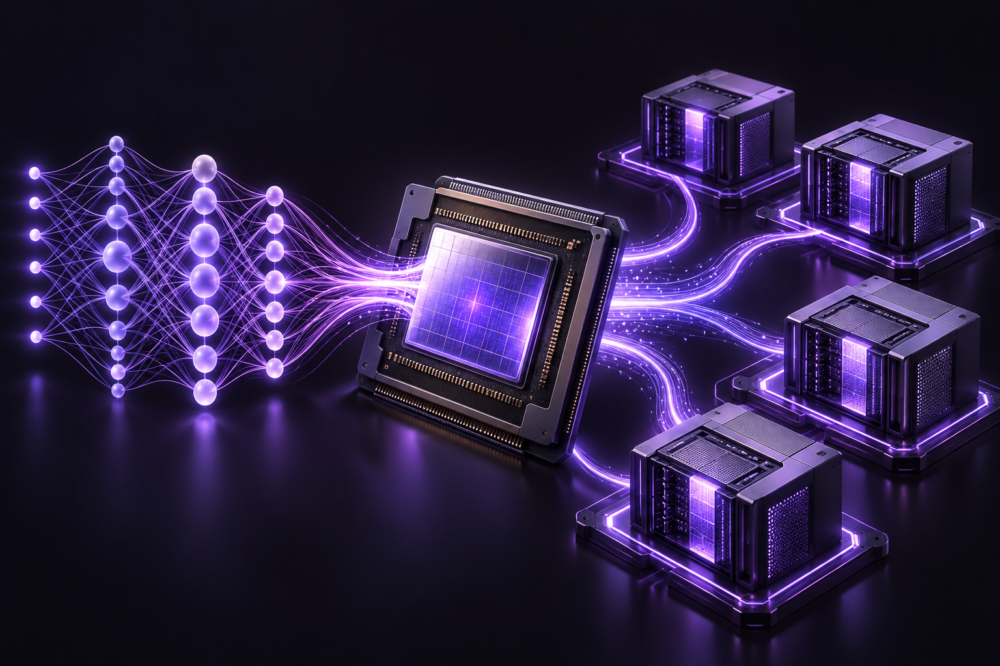
Deep learning systems experiments and implementations.
Explore repository ↗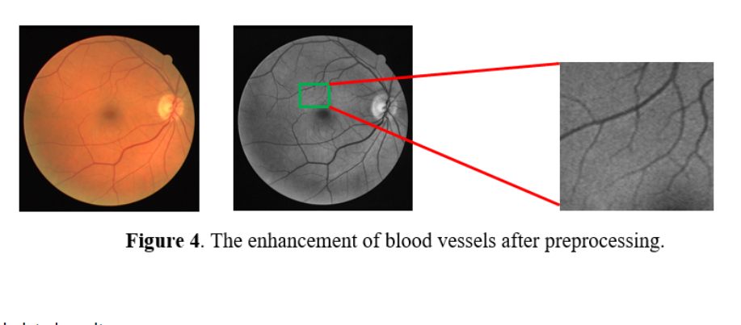
Implemented LadderNet for retinal blood-vessel segmentation and diabetic-retinopathy detection. AUC-ROC: 0.9813.
Explore repository ↗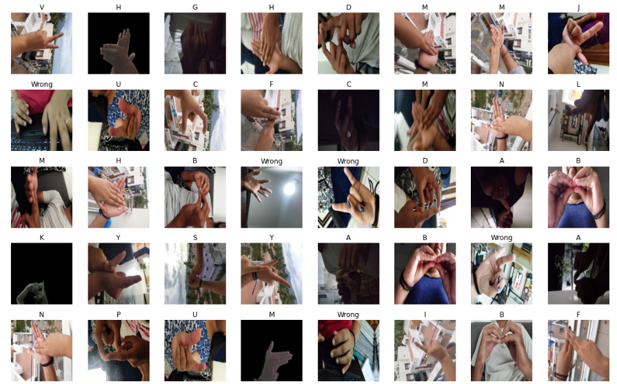
Indian Sign Language classifiers using VGG16 (~94%) and ResNet18–FastAI (~92%), plus a video-based spelling-to-text application.
Research & implementation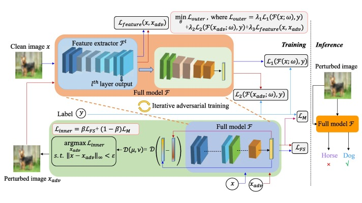
Applied Bayesian variational inference to improve robustness against gradient-based attacks, increasing accuracy by 60% under varying perturbations.
Explore repository ↗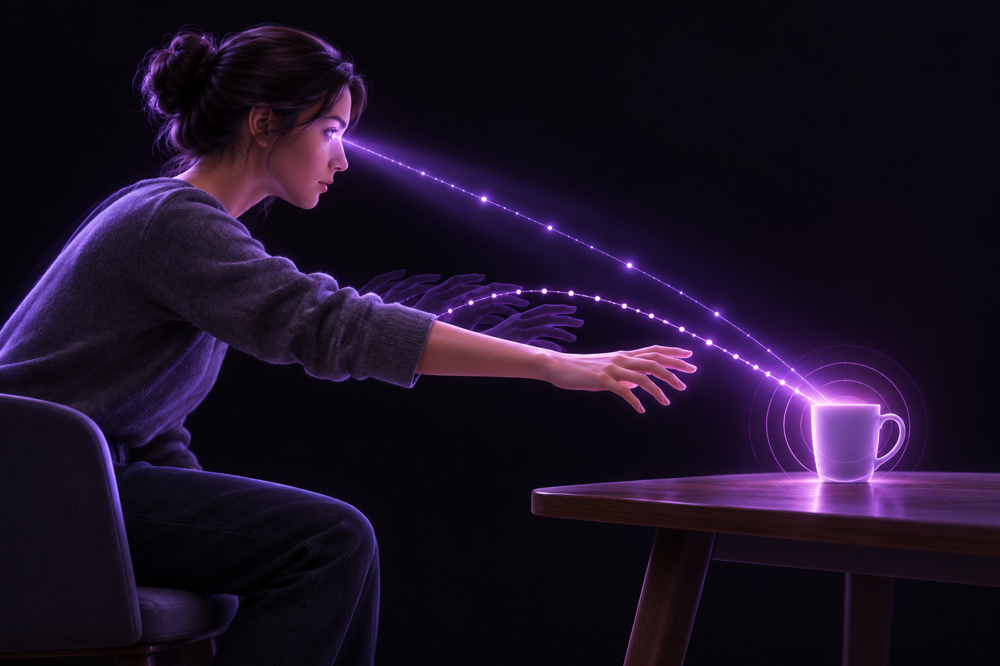
Purdue CoRAL research: a cross-modal transformer uses motion and head orientation to forecast future object-interaction hotspots.
Research & implementation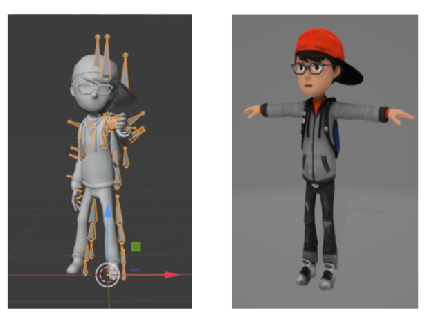
IEEE Confluence 2021: 3D pose estimation and recursive regression for text/speech-to-ISL animation; contributed to the first ISL motion-capture dataset.
Explore repository ↗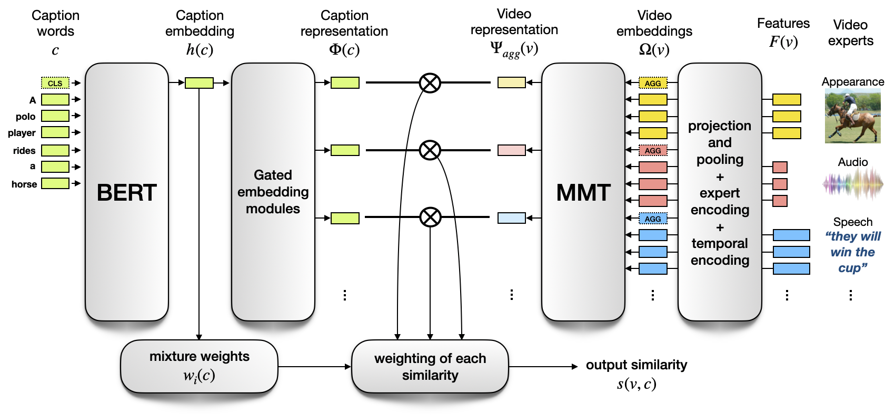
A comprehensive review of multimodal transformer methods and applications through 2022.
Explore repository ↗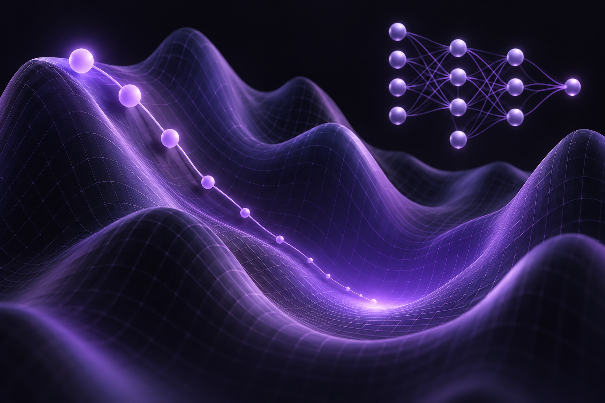
From-scratch implementations of adaptive learning rates and regularization in PyTorch.
Explore repository ↗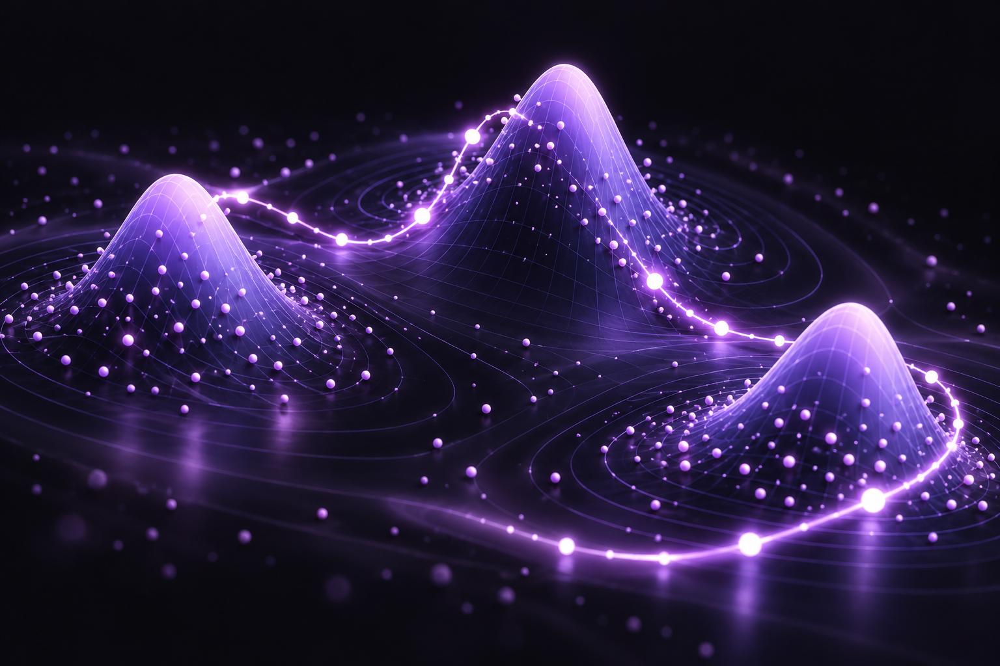
Exploration of HMC for Gaussian mixture model parameters.
Explore repository ↗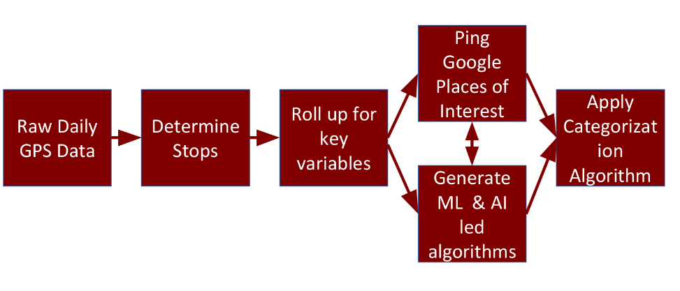
Unsupervised clustering of delivery-driver stops using GPS and location context.
Explore repository ↗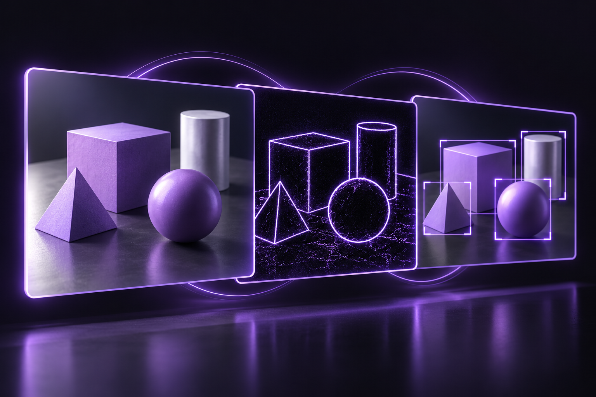
Computer vision and image-processing explorations with OpenCV.
Explore repository ↗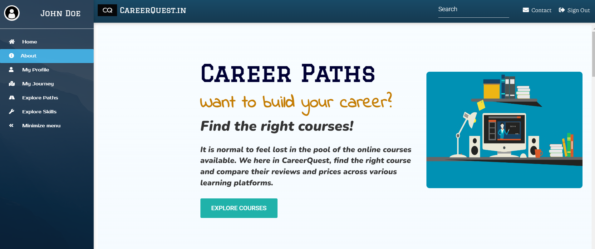
Course discovery and comparison across learning platforms.
Explore repository ↗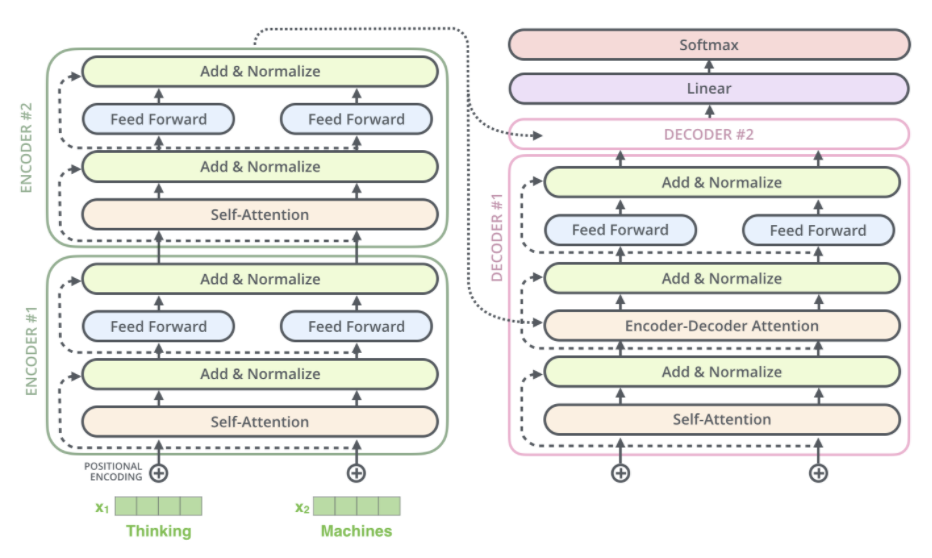
Fine-tuned T5 for title generation from movie and TV descriptions; achieved a ROUGE-Lsum score of 24.9.
Explore repository ↗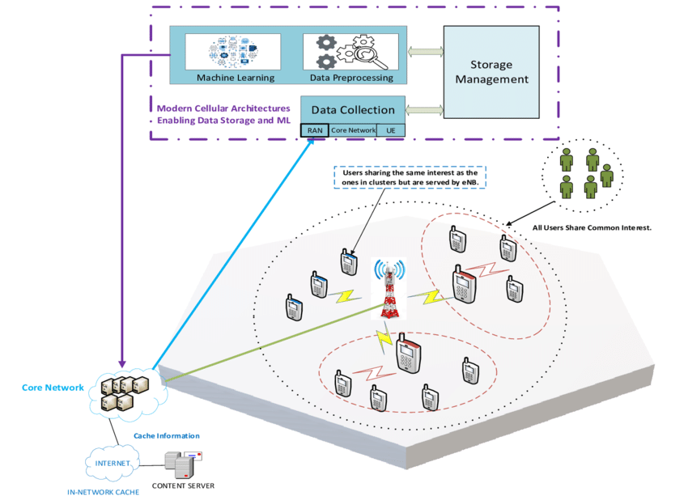
QoS class-label-based network traffic classification.
Explore repository ↗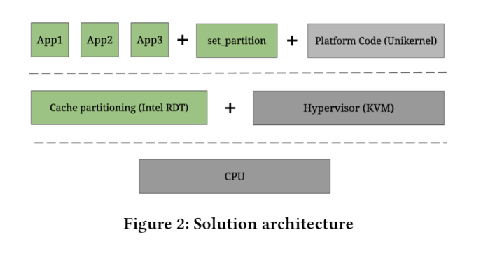
Explored cache partitioning and Unikraft unikernels to improve network I/O performance.
Explore repository ↗03 / BACKGROUND & TOOLKIT
I’m a deep learning enthusiast, fascinated by how neural networks learn to see, reason, and understand the world. I love exploring computer vision, multimodal learning, and AI—from experimenting with architectures to turning research ideas into working models. Alongside that passion, I bring expertise in system design and camera systems: building the sensor, inference, and software foundations that help intelligent models work in the real world.
TOOLS, FRAMEWORKS & METHODS
Deep learning at the core. Vision, systems, and deployment to bring it to life.
Applied in retinal segmentation, NamaSign, title generation, and human–object interaction research.
Explore related workUsed in warehouse perception, stereo collision checks, pallet monitoring, and OpenCV projects.
Explore related workEdge inference and deployment toolkit, including the optimized Toyota perception pipeline.
Explore related workCombining camera, inertial, and wheel measurements for forklift localization.
Explore related workExplored through adversarial defense, HMC, driver-stop categorization, and subscription prediction.
Explore related workReusable sensor frameworks and coordinated configuration for concurrent perception components.
Explore related workBuild-system migrations and automated build, test, and quality checks at Toyota.
Explore related workDeployment toolkit spanning ML services, containers, and cloud infrastructure.
Explore related workPurdue University
M.S. Computer Science · May 2023
West Lafayette, IN · GPA 3.33/4.0
SRM Institute of Science and Technology
B.Tech Computer Science & Engineering · June 2021
Chennai, India · CGPA 9.18/10.0
04 / LET’S CONNECT